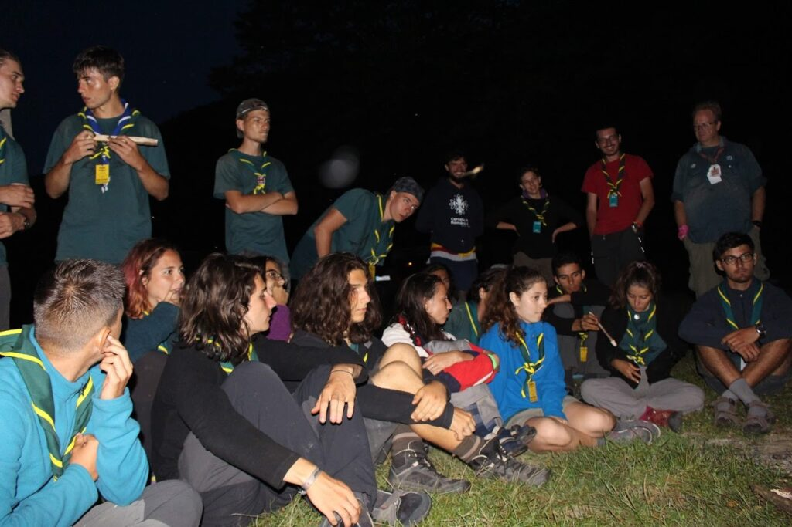

„Na situație" – Pierdut în Pădure 9

Pierdut în Pădure suna ca o provocare interesantă. Poate pentru că așa și este. Prima oară când am fost la pierdut în pădure am fost ca și staff. Atunci, prima mea întrebare din prima noapte a fost: “cum de este așa de târziu iar participanții Încă nu au început să își pună corturile?”. Membrii staff-ului au început să râdă puțin de mine, iar după, mi- au explicat ce se întâmplă de fapt în acest camp. Aveam să aflu că este vorba despre un Camp de supraviețuire. Si nu orice fel de Camp de supraviețuire, ci unul foarte, foarte misto! Așa că anul ăsta, am fost ca și participant pentru prima oară.
Incă din momentul în care am ajuns acolo, am avut mici emoții, cu toate că aveam o vagă experiență de anul trecut ca și staff. Am început cu clasicul careu în care ni s-au explicat regulile, ni s-au împărțit tricourile și am primit eșarfele. Nu am stat mult la discuții și am plecat pe traseu către primul loc de camp. Prima seara a fost petrecută în curtea unei case, dar asta nu înseamnă că am stat în corturi! A fost mai mult o seară introductivă, pentru ca staff-ul să fie aproape de noi in cazul în care se întâmpla ceva. De obicei prima seară este și seara în care cei mai mulți renunță. Dacă nu ai renunțat după prima seară, sunt slabe șanse să mai renunți pe parcurs… deși asta nu este o regulă! Campul propriu-zis începe abia după ce ne trezim în dimineața următoare când plecăm pe traseul în care nu mai suntem supravegheați de către niciun membru de staff până la următorul checkpoint. În checkpoint-uri avem de trecut diferite probe care mai de care mai dificile. Să facem focul cu o baterie și să filtrăm apă de exemplu sau să fim în stare să ne coordonăm pe noi ca și echipă în situații dificilein timp ce suntem legați la ochi și multe alte provocări care, trebuie trăite pe fiu pentru a le putea înțelege pe deplin. Asta este experiența pregătită de staff prin probe și traseu, dar cel mai important lucru din acest camp este modul în care tu, împreună cu patrula ta, reușiti să vă înțelegeți si să cooperații pentru a trece cu bine peste săptămâna respectivă. În momentul în care membrii patrulei se înțeleg bine între ei, atunci campul este unul plăcut și frumos, iar acesta este lucrul care contează cel mai mult. Câștigul este o experiență de câteva minute de la finalul campului, dar experiența campului este aceea de durată și care contează cel mai mult. Eu fac parte din patrula câștigătoare de anul acesta iar atunci când am venit în acest camp, am venit cu gândul de a câștiga. Doar că metoda prin care voiam eu să câștig era prin efort fizic intens și seriozitate. Adevărul e că nu asta este modul în care poți câștiga un astfel de camp ci pur și simplu trebuie să te distrezi și să te simți bine împreună cu patrula ta. Făcând asta, automat și câștigul va veni de la sine. Am avut două opțiuni pe parcursul săptămânii: să strig la oamenii din patrula care poate nu au cea mai buna condiție fizică și care rămâneau mereu în urmă, facand astfel certuri între oameni; sau să înțeleg că unele persoane chiar au venit aici ca să se simtă bine și pentru a avea experiența unui camp mai diferit și unic. Asa ca am respectat asta și am preferat să ne simțim bine. Adevărul este ca îmi luasem gândul de la câștig, dar macar am socializat cu membrii patrulei și am rămas cu o experiență superba împreună, iar asta este cel mai important lucru după părerea mea! 🙂
Seba, eXplorator